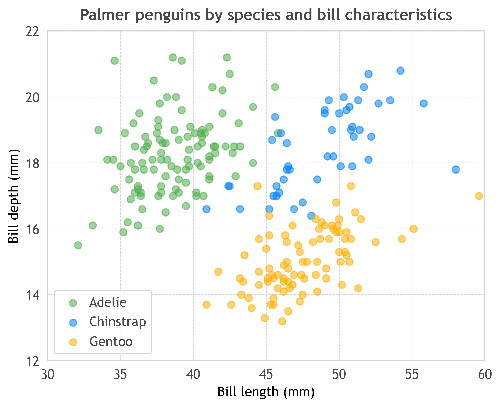
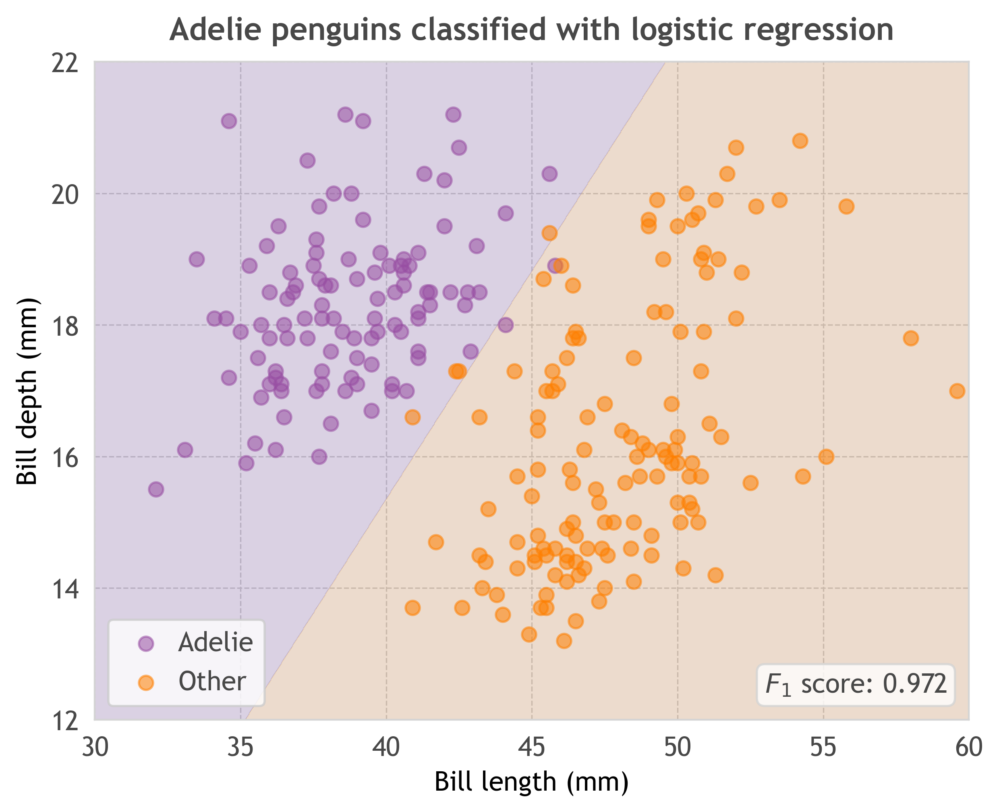
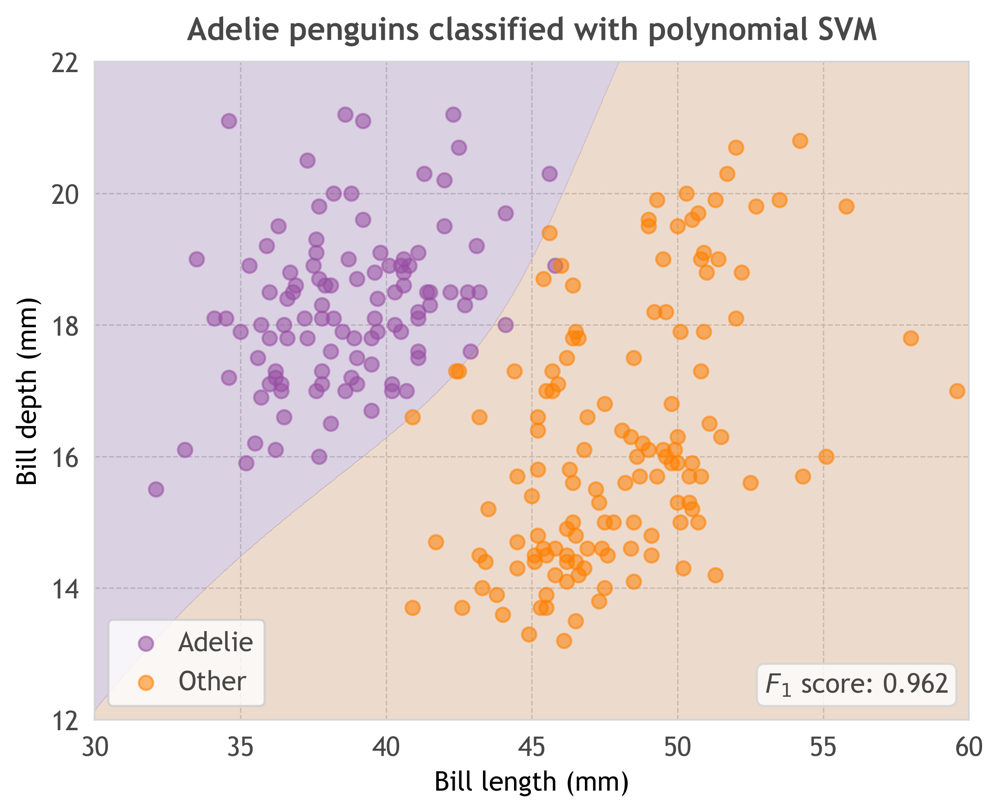
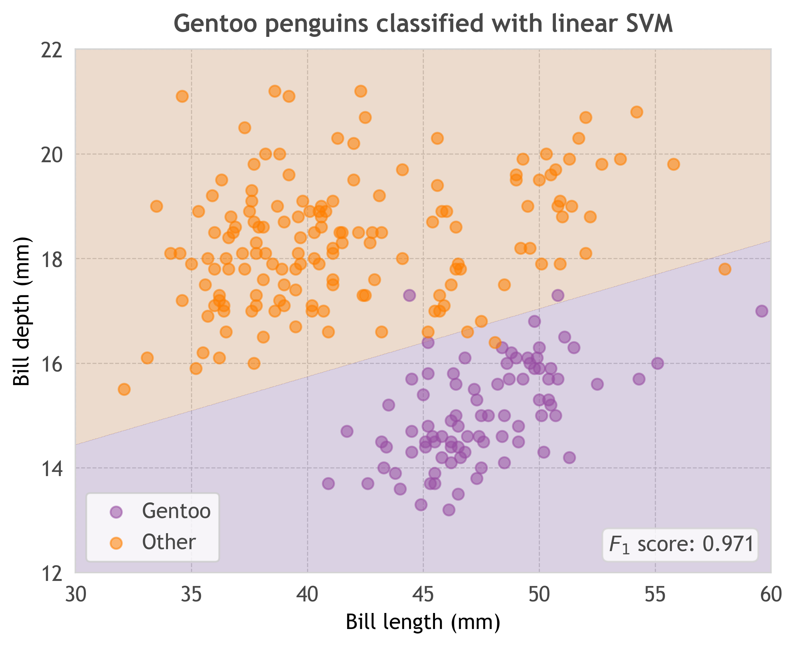
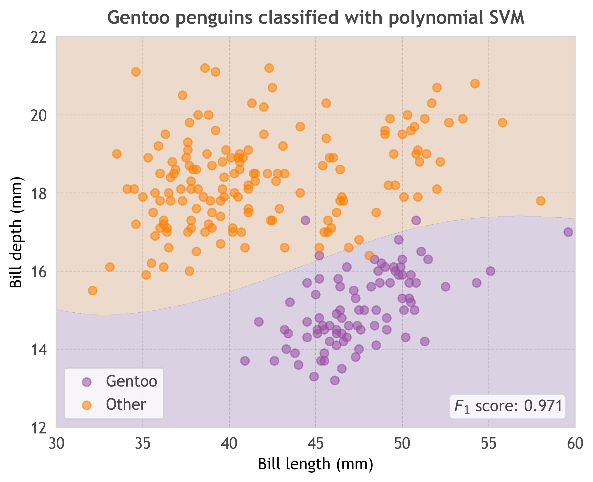
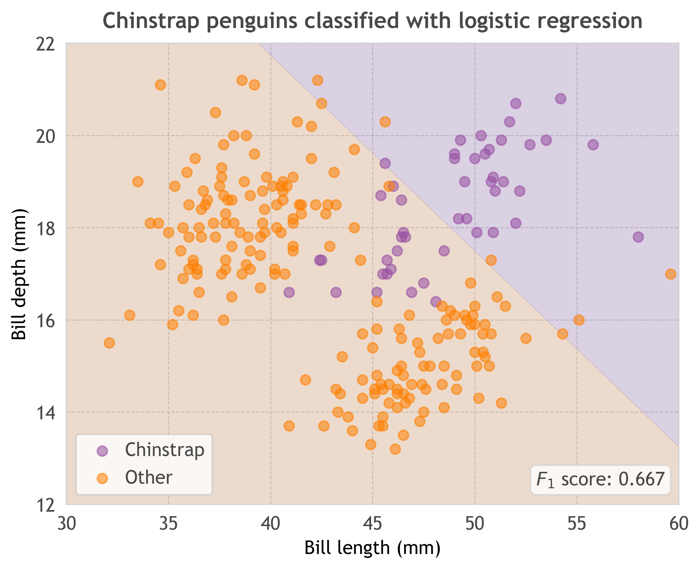
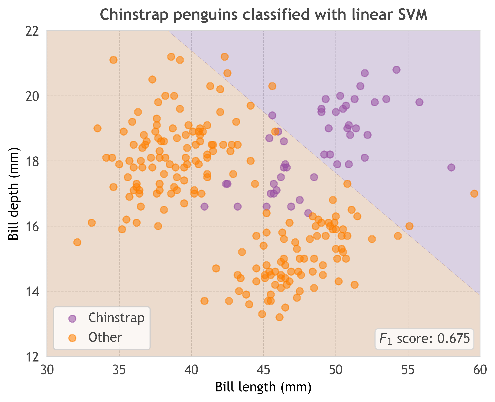
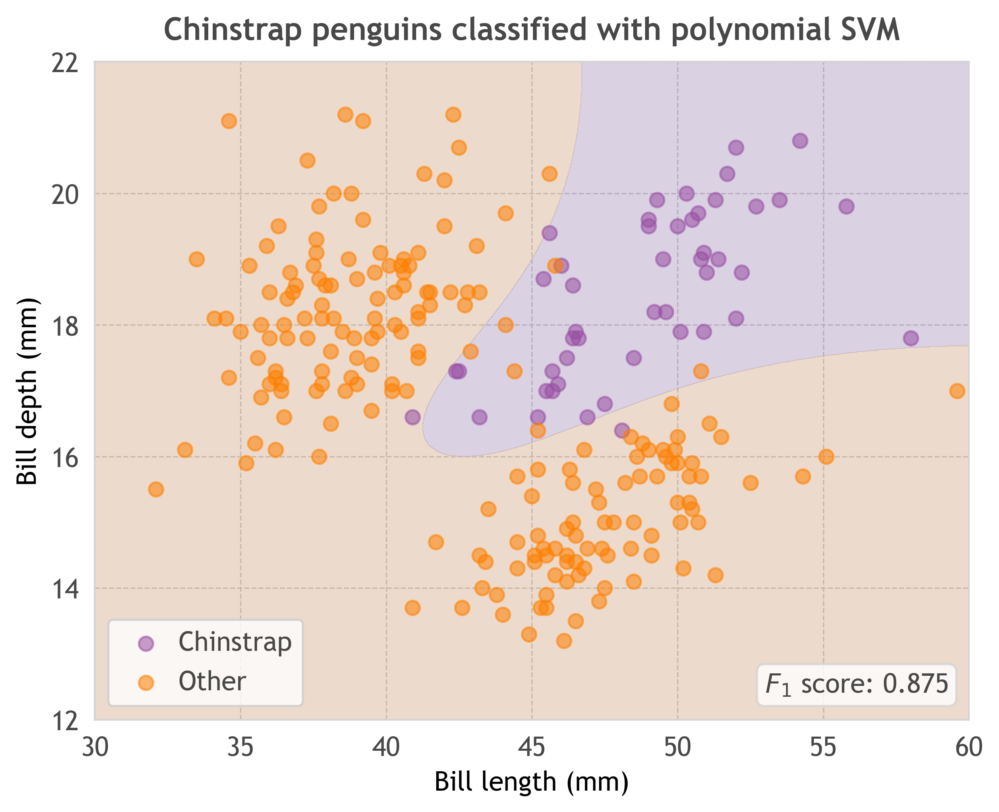
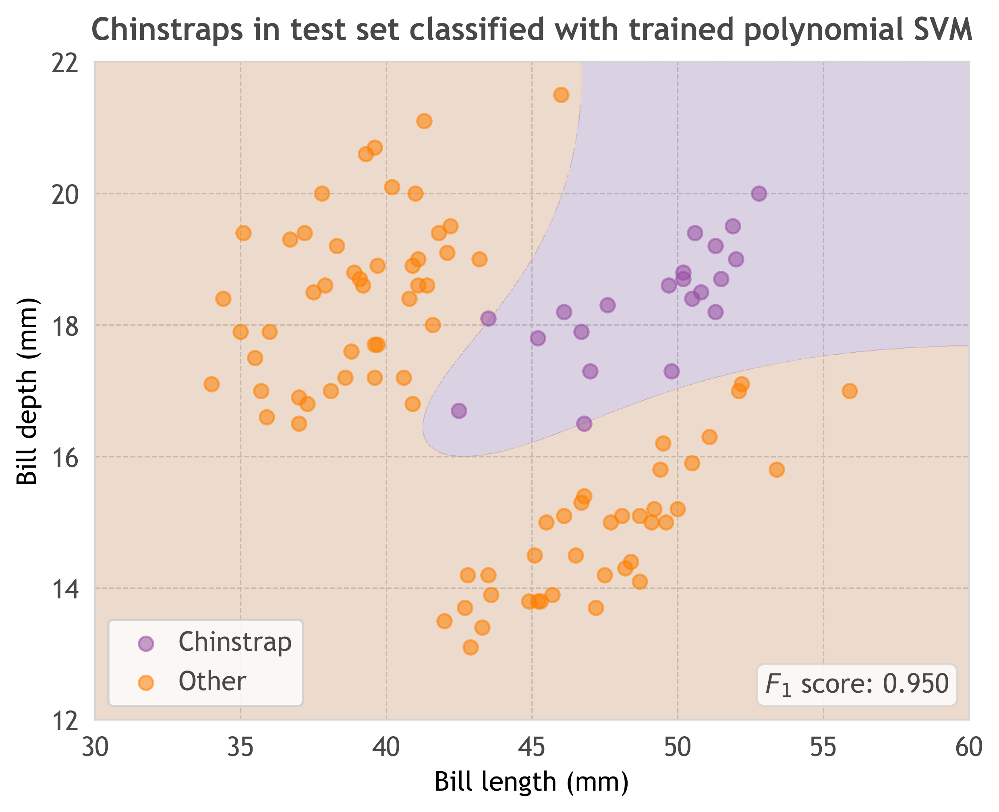

An exploration of the Palmer penguins dataset, using bill features to predict penguin species with various models.
Variation in the length and depth of bills in different penguin species.

Identify Adelie penguins based on their bill features with a logistic regression.

Identify Adelie penguins based on their bill features with a linear SVM.
Identify Adelie penguins based on their bill features with a polynomial SVM.

Identify Gentoo penguins based on their bill features with a logistic regression.
Identify Gentoo penguins based on their bill features with a linear SVM.

Identify Gentoo penguins based on their bill features with a polynomial SVM.

Identify Chinstrap penguins based on their bill features with a logistic regression.

Identify Chinstrap penguins based on their bill features with a linear SVM.

Identify Chinstrap penguins based on their bill features with a polynomial SVM.

Identify Chinstrap penguins in the test set based on their bill features in the training set with a polynomial SVM.
